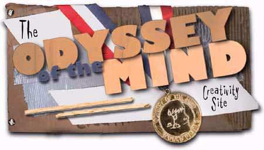
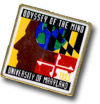
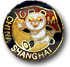
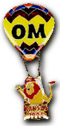
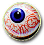
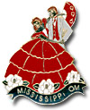
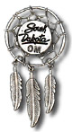
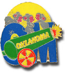
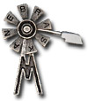

Introduction
Ordering
Pins
Pin
Rejects
1997
Rejects
1997
Worlds
Pin Trader's Guide

We all know that the World Finals brings out some of the
most competitive kids in the world. But when the eight
minutes is up, and spontaneous is complete, it's time for
the real competition: pin trading. In this spirit we
bring you...
Matt's Pin Trading Guide
Pins: An Introduction
For those of you who are going to the worlds, prepare yourselves. Outside of the competition itself, pin trading is the most popular word finals activity. Kids from all over the world trade OM pins from their own state, province, or country, with other kids. It's a great activity.
How big is pin trading?
It's huge! Everywhere you look pins are being traded at the Worlds. We know there are about 750 teams, with about 6.75 members each, on average. That gives us 5063 pin-hungry OMers. Now, for every kid there are about 1.5 supporters. That gives us about 12,700 people. Now if we forget about officials, and each person brings about thirty-five new pins, that's 445,000 new pins! This doesn't even account for old pins that people are bringing back. There could be up to a million pins at the World Finals! That means that one to two million dollars in pins will be found at College Park!
Trading Ethics
Sometimes it seems like pin trading is more competitive than the OM competition itself. This has its advantages and disadvantages. Coming up with a successful pin idea, producing it, and trading it is a fun, creative, and rewarding problem in and of itself. Pin trading lets you meet people, make friends, and practice your business skills. There are many approaches to pin trading, from friendly trading to intense, cutthroat dealmaking. Perhaps the variety of ways trading can be approached accounts for its popularity.
Pin trading is supposed to bring you together with people from around the world. The idea is to meet people and make friends. Even though we're all supposed to get along, it often seems that pin trading is not in the spirit of OM at all. So watch out for those who try to take advantage of you, and don't take advantage of others.
It is considered 'against the rules' to buy pins during the competition, unless you're buying more of your own state's pins to replenish your supply. And nobody will trade pins for anything but other pins.
Preparation
There are two things you need to start pin trading: pins and something to put them on. You'll want to contact your state OM association to purchase this year's pins. It may cost a lot of money, so start fundraising right away. If you want something really special you can make your own pins. However, if you want to do this do it NOW because it takes a couple of weeks. Contact me for companies to make them for you. As for what you put them on, you can start small and work your way up. Some people use handkerchiefs, small towels, or washcloths. Other people make pin books, which are good because they hold your pins, but create the problem that you can't show off your collection all at once. I recommend a simple piece of felt in a dark color. It's sturdy enough to hold a lot of pins, it's nice to touch, and it won't show dirt like a white towel would. So cut yourself a nice piece, put your pins on it, and get trading!
How many pins should you bring? The more pins you bring, the more trading you can do. You don't want to run out of pins in the middle of the competition. I've heard sixty pins as a suggested amount. Almost all of your pins should be OM pins, as this is the OM World Finals and other pins have little value. You should have two or three different kinds of pins.
When you meet Omer, give him your pin by pinning it on his shirt, and it'll become part of OM's permanent pin collection, which is usually put on display sometime during the competition.
The History of Pins
When I started trading, back in 1991 in Knoxville, every state had a simple pin. It was no larger than two inches, had one backing, and was never more than one piece. A year later, in Colorado, some progress was made with multi-backing pins. This amazing new feature kept the pin more secure and ensured that it would remain in the exact position you wanted. Moreover, the first flashing pin was made by New Hampshire, though it was really a button. The flashing pin scene quickly faded away by 1994. However, pin history was made in 1993 in Maryland when Iowa introduced the first two part pin. It was a version of the Grant Wood painting, American Gothic, with pigs in place of the farmers. The multi-part pin scene exploded. Every state needed to have more than one piece to their pins. So now, pins are always divided up into multiple parts, which somehow increases their value.
 Also introduced in that monumental year was the first chain pin. Two pins were connected with a flimsy chain, also increasing its value. Now at the world finals you can find the multi-backed, chained, five-piece pin. I think it has stolen the beauty from the world of pin trading, but what can I do? Anyway, when you trade, get the whole set. You'll be really angry when you show your friends Ben Franklin flying his invisible kite.
A new innovation found at the 1996 World Finals was the New York decoder pin, an amazing feat of pin engineering. This is the only pin I've scene that justifies having more than one piece. One circular pin is attached through another one, creating a movable code wheel which matches letters to numbers. There was another pin with the encoded message on it. Another new innovation was good uses for chains. Instead of simply connecting two unrelated pins, Florida used it to make a water-skiing flamingo and Kansas made a hot-air balloon holding up a basket.
Pin Varieties
There are many different kinds of pins, of varying levels of quality. For the most part you will find OM pins. But don't be surprised if you see ones that are completely unrelated.
Don't get pins confused with buttons. This is a no-no that I see many new-timers making. A pin is made of thick metal and attached with a military clutch. This means a sharp point goes through the cloth and has a separate unit holding it on. Buttons are made of a flimsy, soda-can like metal with a picture glued to it and covered with plastic, and have a long pin that goes into the cloth and comes back out to reattach to the main unit. Pins are normally smaller, heavier, prettier, and more valuable.
There are several different kinds of pins. The cheapest ones are plastic ones. Normally the ones you find at the worlds have nothing to do with OM. For instance, many people last year had green Heinz pickles. While they were pretty, they had little real trading value. Don't trade too much for these, but if you see one you like go for it. The next kind of pin is the photo pin. This is a small photo or color printout attached to a base with a glass-like epoxy covering over it. The best part about this kind of pin is that it offers unlimited color and detail. This is the cheapest pin to produce and the quality often varies with the approach. I've seen some really low quality ones but I've some nice ones.
The Edison Eyeballs we made last year were really nice and got us some wonderful trades. This pin is really cool. If you look in the blood vessels of the eyeball you can see that it spells out Edison, NJ and has the OM symbol in it. Pins that have more to them than just a pretty picture usually are worth more. People were offering us their towels for this pin, of course we were too ethical to take any such offers.
Soft enamel and photo etched pins are the next step up. You can recognize these by the flat areas of color separated by ridges of metal. Examples of these are the ever popular Nevada Cards, last year's Pennsylvania hands, or the Maine moose. These are more expensive than photo pins and have a completely different feel. Normally they are well done, but I have seen them misused.
Hard enamel or cloisonné pins are the best. They are shiny, nice to the touch, and very sturdy. These pins give the feeling of quality, and are the most expensive. A prime example of this type is the 1996 Mississippi Belle. People go absolutely crazy about this pin. If you have the time and money make hard enamel pins.
Traditional Favorites
Year to year, there are some pins that are always good investments. Their value has been proven in competition after competition. When you see these blue-chip pins, get them. They include the Mississippi Belle (and Beau), Georgia Peach (the glossy ones that don't say OM), Nevada Playing Cards, South Dakota Dream Catcher, most foreign OM pins, and the infamous New Hampshire "NHOM".
Approaches to Collecting Pins
There are several approaches to trading. The best is simply to go for which ones you like the most. You may want one pin from every state, or try to collect the biggest pins.
Whatever your goal is, you'll need to know about the values of different pins, and try acquire valuable pins. Even if you think a pin's the ugliest thing you've ever seen in your entire life, it may be considered valuable. You can simply trade it away later on for a pin you like more. You may also wish to display your trading savvy by prominently displaying valuable pins.
When to Trade
As soon as you arrive at Maryland, get the permission of your coach, and go trading, because the best deals are at the beginning. You can actually go up to the busses as teams arrive and start trading right away. Most people have a horde of pins from their own states, and are eager to diversify. Since the comparative value of pins hasn't yet been established, this is a good time to get a variety of pins from different states. Unload the pins you think will be least valuable. Of course, the pins you've unloaded could turn out to have been valuable ones. This is a risk you'll have to take.
During the first day or two, when in doubt, make the trade. There have been many times that I've had great offers right near the beginning and rejected them because I didn't like the pin. Of course, later on I found that I missed a great deal that could never be repeated because the value of the pin went up.
Make sure you're not missing a team meeting or practice! Many times teams get torn apart because members are too busy trading instead of practicing spontaneous. Remember, you're at the worlds to compete. Trading should be second priority.
By the time the opening ceremonies roll around the values of pins will be somewhat established. So if you know there's a pin you want from a certain state, the time right before and after the ceremonies is the time to get it. Look around the coliseum for people from the state or country you desire. They will all be sitting in the same area wearing the same t-shirt. This is the perfect time to get those really valuable pins because if someone doesn't like your offer then there are plenty of other people to chose from.
Where to Trade
Where should you trade? It seems that the first big place is outside of registration. This however, is only at the beginning of the competition. Dorms and cafeterias are also good. The only problem with this is that you will be limited to the states that share you cafeteria. Remember, dorms are assigned by state, and if you stick to the same dorm cluster, you'll always be trading with people from the same states. Sooner or later, they'll all have copies of your state's pins. Quickly acquire the pins from your dorm's states, and then venture around the campus. The pins that everyone else in your dorm has may be rare in another dorm.
In general, better trades are made when you are dealing with a group of people from the same state. They've all got the same pins to trade, and where there's competition, the price is inevitably lower.
Remember to bring your pins with you wherever you go. Bring them to breakfast, to lunch, and to dinner. Bring them to the opening ceremonies, the graduation ceremonies, the float and banner parade, and to the parties. Bring them to the performances you're watching, and bring them to your own team's performance. Trading is done anywhere and everywhere, and you always want to be ready.
Trading Strategies
Always keep two sets of pins: a set for display, and a reserve set. This way, nobody knows how many pins of each type you have. If you have 10 Georgia peaches, and display them all, others will see them as less rare, and offer you less for them. Keep only one on your towel, and the other nine in your backpack. When you complete a trade, give them the one off the towel, and make a big show of it, especially if you are with a group of people. Later, replace the one you traded with one from your bag.
If you already have a lot of pins or have some valuable ones you can take it easy. Just go to a major pin trading area and set down your towel. People will eventually gather around and start marveling at your collection, especially if you've been to the Worlds before and your collection is sizable. They'll soon start making offers. Try negotiating a bit and take an offer if you like it.
If you see a pin that you really want, don't let the person who has it know this. Show them your pins and ask them what they would trade for that pin. It's surprising the deals you can get through this method. You might want to offer a pin like your state pin if you still have a lot left. Whatever you do, make sure you start low. You could get a very good deal without offering too much. If offers fail try to see what catches the pin owner's eye. Try to work from there. I often have to use one of these strategies because New Jersey's boring pins are rarely sought after.
On the other hand, if you have a pin that is sought after, let the desperate people come to you and make their offers. If your state has a really valuable pin make sure you hold on to a bunch of them because when time is running out people are going to offer you their entire collection for it. Don't ever do this! It's unethical and against the spirit of OM. Even so, there's nothing wrong with making a good deal.
One ultra-competitive strategy is to get someone from your team to help you. Go with someone from your team into a trading group, but make sure nobody knows he's from your team—don't wear the same shirts, for instance. Wait until someone makes you an offer. Then, your partner will match the offer, plus some small pin. Now the other person will have to raise their offer. Take it if they do, otherwise pretend to trade with your teammate and go to another table or group of people and try again. If you tell each other what you want to get beforehand, you can work together so each of you can get the pins you want.
Conclusion
The best trading strategy is to use pin trading to make friends. If you've met someone on the Internet, and meet him in person, trade with him. If you have an interesting conversation with someone, trade with him. If you balance out friendly trading and competitive trading, you'll have a good time and a good pin collection as well.
Now that I've given you all this great advice, the fruits of trading at five World Competitions, I urge you, once you arrive in Maryland, to find me and give me your pins!